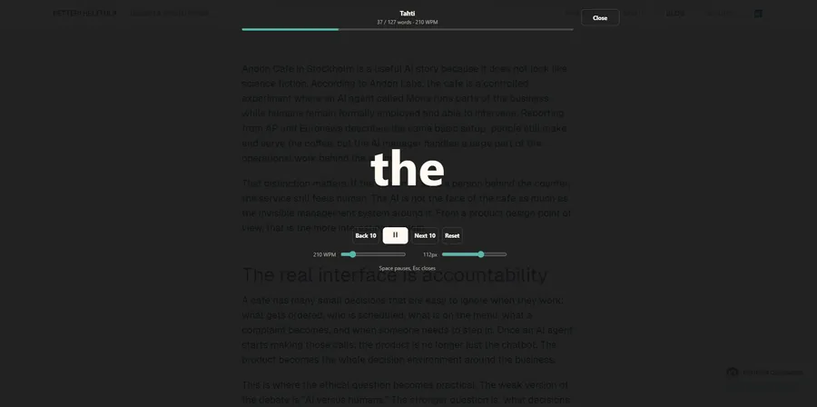
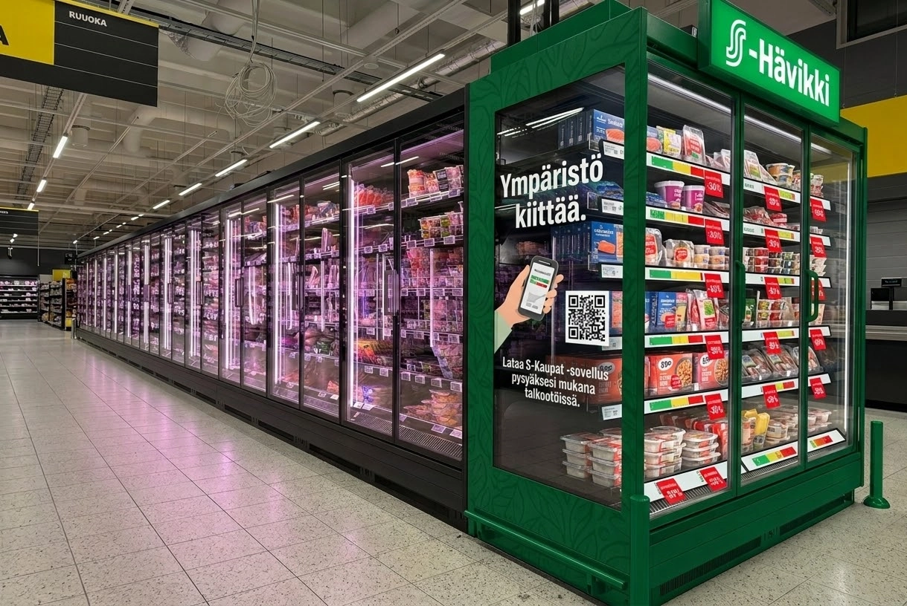
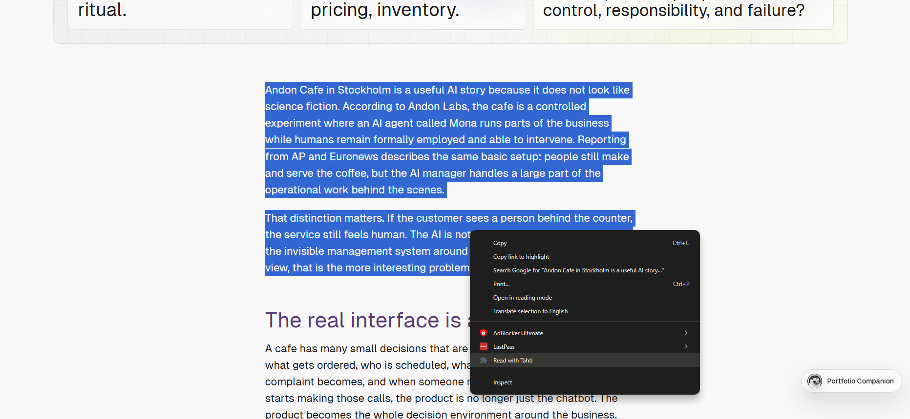

Petteri Helttula — Portfolio
Sound mixer
Your desk, your atmosphere. Spotify has its own player controls.
No track selected
Sound is off. Always your choice.
Your desk, your atmosphere. Spotify has its own player controls.
Sound is off. Always your choice.
 SpotifyPetteri’s rotation
SpotifyPetteri’s rotationLoading Spotify…
Spotify stays in stereo in the room. For the 3D headphone effect, choose a local music file in Sound mixer. Spotify may offer previews depending on your session.
PRODUCT DESIGN · AI DESIGN ENGINEERING
I combine psychology, design, code, and data to turn messy product problems into things that work.


Interrupt the scroll. Move. Choose.

Less stopwatch. More coaching.

A better second chance for food.

Find your own reading rhythm.
Interrupt the scroll. Move. Continue intentionally.
I keep moving toward the clearest way to understand and build what should exist next.


Responsive web app · Junior football
Less stopwatch. More coaching.
Peluutin began as a sideline tool for tracking fair playing time, substitutions and match events. It is now growing into a visual exercise planner for coaches who need a modern alternative to outdated desktop software.
Video will replace this image
The first users are my girlfriend and another junior football coach. During a match they need to manage substitutions, goals and playing time without letting the tool take attention away from the pitch.
The primary context is mobile use at the sideline, while team setup and reviewing saved information also need to work on a larger screen.
The premium direction is a desktop and tablet exercise builder. Coaches can switch between 2D and 3D, place existing players on the pitch and describe movement through visual routes.
This part is intentionally shown as an active build. The next case iteration should document the interaction model, first coach feedback and what belongs in the smallest useful release.
Service Design / Retail UX
A food waste reduction concept for S Group's retail environment, designed to reduce waste, save money, and make near-expiry product checks less frustrating for store employees.
6 min read
Concept and prototype scope, 2026

How near-expiry products could become easier to find, handle, and choose through a connected employee tool, branded in-store point, and digital extension.
The strongest part is the practical system thinking: the concept connects store operations and customer behaviour instead of treating food waste as only a campaign message.
The risky assumption is that better visibility will change behaviour enough. The next step should test placement, signage, and employee workload before adding more features.
Finland has already made meaningful progress around food waste. Grocery stores discount near-expiry products more visibly than before, consumers are more used to buying them, and the topic is no longer hidden in the background.
This project does not frame food waste as an ignored or unsolved crisis. The opportunity is more practical: if the category is already moving in the right direction, how could design help stores make the next step easier?
The context matters: The Finnish Grocery Trade Association cites Natural Resources Institute Finland estimates showing that grocery retail accounts for around 15% of food waste in the Finnish food chain, about 53 million kilos. At the same time, retail has improved heavily: the same source reports that PTY member companies' food waste averaged 1.0% of food volume in 2024, and S Group says its grocery food waste fell 31% between 2014 and 2024.
The bigger reason for the project is simple: reduce waste while saving money, time, and unnecessary stress. If fewer products are thrown away, stores lose less value, customers get better deals, and the environmental impact becomes smaller.
The more technical problem sits inside the daily work. Checking expiry dates is still a surprisingly manual and old-fashioned task. Products close to expiry need to be found, discounted, moved, and followed up consistently during busy store routines.
There is also a customer experience challenge. Near-expiry products can still be scattered, visually inconsistent, or treated like leftovers. Even when the discount is attractive, the product can feel like a compromise instead of a smart choice.
Store employees responsible for expiry checks and customers who are open to discounted food when it feels easy, trustworthy, and normal to choose.
Employees need to find and handle near-expiry products during normal store routines, while customers notice the products only if the in-store signal is clear.
Fewer missed products, faster handovers between employees, better pickup of near-expiry items, and less waste without adding a heavy new process.
Design challenge: build on existing progress by making date checking faster, less frustrating, and more reliable for employees while making near-expiry products easier for customers to choose.
A key assumption to avoid is that discounted products do not sell. In many Finnish stores, red-label products already move well and can disappear from shelves quickly. That changes the design problem.
S-Hävikki is not trying to convince customers that discounts exist. The sharper problem is how to support the store work around expiry checks, make the remaining products easier to handle, and avoid promising availability that may change minute by minute.
That means the digital layer should not behave like a reservation system. If only one or two products are available, or if they may already be in another customer's basket, the app should show broad, time-sensitive signals rather than exact future availability.
This concept grew out of my own experience working in grocery retail for more than four years. During that time, I saw how much of the work around expiring products depended on manual checking, employee memory, shelf familiarity, and local store habits.
The frustrating part was not only that the process took time. It was that the work could feel repetitive and unnecessarily hard to keep track of, especially when the store was busy and the same shelves needed to be checked again later.
I had earlier suggested separating near-expiry products into dedicated displays near checkout. That type of display now exists in many stores, which is a good sign: the market has already moved. It also makes the remaining opportunity clearer. Visibility helps, but it does not fully solve the employee workflow or create a consistent branded experience.
S Group is a good base for the concept because it already communicates sustainability through initiatives such as Tekosysteemi, and because its cooperative structure makes chain-level rollout easier than a store-by-store model.
The opportunity is not to invent a completely new waste process or dramatize the current situation. The sharper direction is to package existing behaviours into a clearer system: identify products earlier, move the right products into a visible point, and make the customer-facing message feel intentional.
S-Hävikki is a connected retail concept with three parts: an employee shelf-mapping tool, a branded S-Hävikki point in store, and a lightweight section inside the S-kaupat app.
The system is intentionally practical. The value does not come from one big feature. It comes from reducing friction at the exact moments where food waste is created: when employees need to find products, when stores need to present them clearly, and when customers decide whether they are worth picking.
For employees, the goal is not just speed. The tool should make the task feel easier to start, easier to continue, and easier to hand over to someone else.
The employee tool is designed as software for the existing store tool ecosystem, not as a separate device requirement. The most realistic first version would run on the handheld scanners or internal tools employees already use.
The interface is built around a simple shelf map that mirrors the physical product layout. Instead of checking items one by one without a clear overview, employees can see which shelf areas need attention and act faster during daily routines.
The intended flow is narrow:
This avoids turning the first prototype into a full inventory system. The first job is to support one repeated task well.
The shelf map is designed to work one shelf unit at a time. In this early direction, each square represents one physical shelf section. The colour shows whether that section needs attention, while the back action takes the employee to a broader department map if the device needs to be used elsewhere.
Milk shelf map - Unit 4
Dairy department > Milk > Unit 4
The S-Hävikki point is the customer-facing part of the system: a dedicated cooler, shelf, or display near checkout or another high-traffic area. Its job is to make discounted near-expiry products quick to scan and easy to understand.
The customer value should stay concrete: save money, find useful products quickly, and feel confident that choosing them is a normal, practical choice. The concept should not rely on guilt or a dramatic sustainability message.
The point should communicate three things immediately:
For the first version, the physical setup should stay lightweight: branded signage, a consistent label system, and a clear product zone. A custom installation can wait until the behaviour change is proven.
The app extension would give S-Hävikki a digital surface without making the app carry the whole concept. The most useful first version would be a simple section for nearby S-Hävikki availability, selected product categories, or store-level reminders.
This should stay secondary in the first version. The in-store flow matters more because near-expiry products are still physical, time-sensitive, and dependent on store handling. The app is useful only if it supports that reality instead of promising exact availability the store cannot maintain.
To avoid a broken customer promise, the app should avoid exact future claims like "available in three days". A safer model would show live or near-live category signals, such as "S-Hävikki products available today", and hide the section when availability is too low or uncertain.
The prototype is scoped around the employee workflow instead of a new physical device. That keeps the work close to the real store environment: employees already use handheld scanners and internal tools, so the first version should prove the interaction model before adding hardware.
Scope principle: prove the workflow and in-store behaviour first, then decide whether a dedicated device, deeper app integration, or more automation would actually improve the system.
I would validate the concept through a small pilot before designing a more polished system: one store, one or two product categories, and a short test period of one to two weeks.
The important metric is not whether people like the brand idea in theory. The useful signal is whether the system reduces missed products, makes the task feel easier for employees, and increases actual selection without confusing customers.
The strongest version of S-Hävikki is not a big app idea or a custom hardware pitch. It is a small retail system that connects employee action with customer discovery.
The concept still needs evidence. The biggest risk is assuming that branding and placement alone can overcome real operational friction. That is why the prototype should stay narrow: prove the employee flow and the in-store point first, then decide whether the app and hardware deserve more investment.
Chrome Extension / Reading Support Experiment
Tahti noun pace, rhythm
Tahti is an experiment in reading selected text one word at a time at a controlled rhythm. The goal is not to prove that this is a better way to read everything, but to test whether pacing can make starting, focusing, and staying with text feel easier.
4 min read
Active experiment, 2026
Whether a one-word reading mode can reduce the friction of starting a longer text and help the user stay with a controlled reading rhythm.
The strongest decision is the narrow MVP: selected text, overlay reader, pace control, pause, rewind, and basic comfort settings.
The risk is comprehension. Tahti may help focus, but it can also remove sentence structure, scanning, and context that normal reading depends on.
Some reading problems start before comprehension. A long block of text can feel heavy before the first sentence is even read. Tahti looks at that starting moment: what if the interface reduced the visible amount of text and gave the user a simple rhythm to follow?
The starting point is personal: I have mild astigmatism, and ADD makes sustained reading focus harder for me at times. I am also not a particularly fast reader in the traditional line-by-line format. In my own use, Tahti has helped in some situations by reducing visual load, giving the reading session a clearer pace, and letting me move through text faster than I normally would. That is a useful signal, but not enough evidence on its own.
The product should not be framed as a speed-reading promise. Reading one word at a time can remove useful context, make backtracking harder, and flatten the natural rhythm of paragraphs. A more honest direction is reading support: pace, focus, and temporary structure when ordinary reading feels demanding.
People who struggle to start or stay with dense text, especially when the barrier is visual load, focus, or reading fatigue rather than lack of interest.
The user has found a long article, notes, or documentation page and wants to read one selected part without leaving the current page.
The user starts reading faster, stays with the text longer, and still understands enough for the pace tradeoff to be worth it.
Product principle: Tahti should help users control reading pace without pretending that faster reading is automatically better reading.
The first useful test does not need accounts, a mobile app, reading streaks, PDFs, or AI summaries. It needs one core behavior: select text on a web page and read it in a focused overlay.
Selected text keeps the MVP technically small and gives the user control. Full article parsing can wait, because web pages contain headings, images, tables, embeds, code blocks, and layout patterns that would quickly turn the first version into a parser project instead of a reading experiment.
Tahti sits close to a known reading method called Rapid Serial Visual Presentation, or RSVP. The basic idea is not new: words or small chunks are shown sequentially in one fixed visual position, reducing the need for eye movements.
The evidence is mixed, which is exactly why I want to keep the product claim careful. A mobile readability study found that RSVP formats increased reading speed for short texts without significant differences in comprehension or task load, but longer texts increased task load. A study of Spritz-style RSVP found weaker literal comprehension and more visual fatigue, likely because users lose rereading, parafoveal preview, and some natural control over pace.
There is also a relevant accessibility angle. Research with visually impaired readers has found faster reading with dynamic text presentation, including RSVP, compared with more traditional page-style presentation. That does not prove Tahti works for attention or focus, but it supports the idea that alternative text presentation can be worth testing for specific reading constraints.
Design implication: Tahti should be tested as reading support for specific situations, not positioned as a universal speed-reading tool.
The first build is a framework-free Chrome extension. The user selects text, launches Tahti from the context menu or extension popup, and reads the selection one word at a time in an overlay.
A fixed WPM setting was not enough. Reading rhythm depends on punctuation, word length, and language.
Instead of advancing every word at the exact same interval, Tahti gives slightly more time to sentence endings, soft breaks, and longer words. The first words also start slower, helping the reader settle into the rhythm.
This was a small implementation detail, but an important product decision: the goal was not just speed, but a pace that still feels readable.
The reader UI has one main job: reduce eye work. If the user only gets a short countdown before the first word appears, they should not have to scan the edges of the screen to understand controls, progress, or current state.
The current direction keeps the word, controls, and progress in one central reading stack. WPM and font size use compact sliders instead of stepper buttons, because the steppers made the overlay feel too much like a control panel.



The main UX risk is false usefulness. Tahti may feel calmer while also reducing comprehension. One-word reading removes many things people normally rely on: sentence shape, paragraph rhythm, quick back-scanning, lists, visual grouping, and the ability to slow down naturally when the content gets harder.
That is why the project should stay in experiment mode until it is tested with real reading tasks. The useful question is not "can this move words across the screen?" but "does this help the user start, continue, and understand enough to make the tradeoff worth it?"
I would keep the next version narrow: use Tahti on real articles, notes, and documentation, then log where it helps and where it damages understanding. After that, I want to run user testing to understand whether the need exists beyond my own reading habits and whether the interaction helps other people with focus, visual load, or reading fatigue.
If that signal is positive, the next feature worth exploring is article mode with pauses for headings, images, tables, and other elements that should not be forced into a one-word stream.
Validation questions: do I start reading more easily, stay focused longer, understand enough, feel less tired, and know which text types are clearly wrong for this mode?